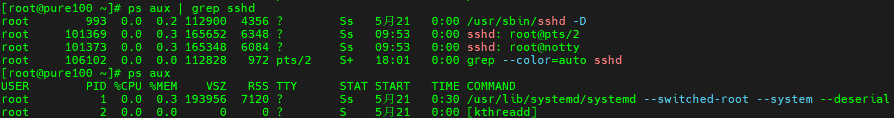

Linux实操-常用命令-进程管理类

文章目录
进程是正在执行的一个程序或命令，每一个进程都是一个运行的实体，都有自己的地址空间，并占用一定的系统资源。
ps 查看当前系统进程状态
基本命令
-
常用语法
1 2ps aux | grep xxx # process status，进程状态，功能描述：查看系统中所有进程 ps -ef | grep xxx # 功能描述：可以查看子父进程之间的关系 -
选项说明
-
经验技巧
- 如果想查看进程的CPU 占用率和内存占用率，可以使用
aux - 如果想查看进程的父进程ID 可以使用
-ef
- 如果想查看进程的CPU 占用率和内存占用率，可以使用
显示信息说明
ps aux 显示信息说明
| 显示信息 | 说明 |
|---|---|
| USER | 该进程是由哪个用户产生的 |
| PID | 进程的ID号 |
| %CPU | 该进程占用CPU资源的百分比，占用越高，进程越耗费资源 |
| %MEM | 该进程占用物理内存的百分比，占用越高，进程越耗费资源 |
| VSZ | 该进程占用虚拟内存的大小，单位KB |
| RSS | 该进程占用实际物理内存的大小，单位KB |
| TTY | 该进程是在哪个终端中运行的。 对于CentOS 来说，tty1 是图形化终端， tty2-tty6 是本地的字符界面终端， pts/0-255 代表虚拟终端 |
| STAT | 进程状态。常见的状态有：R：运行状态、S：睡眠状态、T：暂停状态、Z：僵尸状态、s：包含子进程、l：多线程、+：前台显示、<：表示当前进程优先级较高 |
| START | 该进程的启动时间 |
| TIME | 该进程占用CPU 的运算时间，注意不是系统时间 |
| COMMAND | 产生此进程的命令名 |
ps -ef 显示信息说明
| 显示信息 | 说明 |
|---|---|
| UID | 用户ID |
| PID | 进程ID |
| PPID | 父进程ID |
| C | CPU 用于计算执行优先级的因子。数值越大，表明进程是CPU 密集型运算，执行优先级会降低；数值越小，表明进程是I/O 密集型运算，执行优先级会提高 |
| STIME | 进程启动的时间 |
| TTY | 完整的终端名称 |
| TIME | CPU 时间 |
| CMD | 启动进程所用的命令和参数 |
实操案例
查看进程的CPU 占用率和内存占用率
|
|

查看进程的父进程ID
|
|
kill 终止进程
-
基本语法
1 2 3kill [选项] 进程号 # 功能描述：通过进程号杀死进程 killall 进程名称 # 功能描述：通过进程名称杀死进程，也支持通配符，这 在系统因负载过大而变得很慢时很有 -
选项说明
可以使用
kill -l查看信号值 -
实操案例
-
kill -9 进程号强制杀死ssh远程登录新建一个新的远程登录
使用kill命令终止这个进程
-
killall 进程名杀死shhd守护进程sshd守护进程被杀死后需要从物理机重新启动，谨慎操作
查看虚拟机的sshd状态信息
-
pstree查看进程树
-
基本语法
1pstree [选项] # 功能描述：查看进程树 -
选项说明
-
实操案例
显示进程pid

top 实时监控系统进程状态
基本命令
-
基本语法
1top [选项] -
选项说明
-
操作说明
显示信息说明
第一行，任务队列信息
| 显示内容 | 说明 |
|---|---|
| 12:46:47 | 系统当前时间 |
| up 1 day, 5:10 | 系统的运行时间，本机已经运行1 天 5小时10分钟 |
| 4 users | 当前登录了4个用户 |
| load average: 0.00, 0.01, 0.05 | 系统在之前1 分钟，5 分钟，15 分钟的平均负载。 一般认为小于1 时，负载较小。如果大于1，系统已经超出负荷。 |
第二行，进程信息
| 显示内容 | 说明 |
|---|---|
| Tasks: 220 total | 系统中的进程总数 |
| 1 running | 正在运行的进程数 |
| 219 sleeping | 睡眠的进程 |
| 0 stopped | 正在停止的进程 |
| 0 zombie | 僵尸进程。如果不是0，需要手工检查僵尸进程 |
第三行，CPU 信息
| 显示内容 | 说明 |
|---|---|
| %Cpu(s): 0.0 us | 用户模式占用的CPU 百分比 |
| 0.0 sy | 系统模式占用的CPU 百分比 |
| 0.0 ni | 改变过优先级的用户进程占用的CPU 百分比 |
| 100.0 id | 空闲CPU 的CPU 百分比 |
| 0.0 wa | 等待输入/输出的进程的占用CPU 百分比 |
| 0.0 hi | 硬中断请求服务占用的CPU 百分比 |
| 0.0 si | 软中断请求服务占用的CPU 百分比 |
| 0.0 st | st（Steal time）虚拟时间百分比。就是当有虚拟 机时，虚拟CPU 等待实际CPU 的时间百分比。 |
第四行，物理内存信息
| 显示内容 | 说明 |
|---|---|
| 2027896 total | 物理内存的总量，单位KB |
| 419832 free | 空闲的物理内存数量，我们使用的是虚拟机，总 共只分配了628MB 内存，所以只有53MB 的空 闲内存了 |
| 874228 used | 已经使用的物理内存数量 |
| 733836 buff/cache | 作为缓冲的内存数量 |
第五行，交换分区（swap）信息
| 显示内容 | 说明 |
|---|---|
| 4194300 total | 交换分区（虚拟内存）的总大小 |
| 4193780 free | 空闲交换分区的大小 |
| 520 used | 已经使用的交互分区的大小 |
| 930448 avail Mem | 可用内存 |
第六行，第七行，进程状态监控
| 显示内容 | 说明 |
|---|---|
| PID | 进程ID |
| USER | 进程所有者 |
| PR | 进程优先级 |
| NI | nice值。负值表示高优先级，正值表示低优先级 |
| VIRT | 进程使用的虚拟内存总量，单位kb。 |
| RES | 进程使用的虚拟内存总量，单位kb。VIRT=SWAP+RES |
| SHR | 共享内存大小，单位kb |
| S | 进程状态。D=不可中断的睡眠状态 R=运行 S=睡眠 T=跟踪/停止 Z=僵尸进程 |
| %CPU | 上次更新到现在的CPU时间占用百分比 |
| %MEN | 进程使用的物理内存百分比 |
| TIME+ | 进程使用的CPU时间总计，单位1/100秒 |
| COMMAND | 进程名称（命令名/命令行） |
实操案例
|
|
-
top -d 1每秒更新 -
查看指定进程并杀死该进程
netstat 显示网络状态和端口占用信息
基本命令
-
基本语法
1netstat [选项] | grep 进程号/端口号 # 功能描述：查看该进程网络信息/网络端口号占用情况 -
选项说明
显示信息说明
从整体上看，netstat的输出结果可以分为两个部分：
一个是Active Internet connections，称为有源TCP连接，
另一个是Active UNIX domain sockets，称为有源Unix域套接口(和网络套接字一样，但是只能用于本机通信，性能可以提高一倍)。

Active Internet connections部分
| 显示内容 | 说明 | |
|---|---|---|
| Proto | 协议名 | |
| Recv-Q | 网络接收队列。表示收到的数据已在本地接收缓冲，但是还有多少没有被进程取走，recv()。如果接收队列Recv-Q一直处于阻塞状态，可能是遭受了拒绝服务 denial-of-service 攻击。 | |
| Send-Q | 网路发送队列。对方没有收到的数据或者说没有Ack的,还是本地缓冲区。如果发送队列Send-Q不能很快的清零，可能是有应用向外发送数据包过快，或者是对方接收数据包不够快。 | recv-Q、send-Q这两个值通常应该为0，如果不为0可能是有问题的。packets在两个队列里都不应该有堆积状态。可接受短暂的非0情况。 |
| Local Address | 本地地址。 | 127.0.0.1:port 表示只能本机访问的端口，外网无法访问，如127.0.0.1:8080：表示监听本机IPv4的loopback地址的8080端口。如果某个服务只监听了回环地址，那么只能在本机进行访问，无法通过tcp/ip 协议进行远程访问 。 类似的::1:port对应IPv6,如::1:9000：表示监听IPv6的回环地址的9000端口，::1这个表示IPv6的loopback地址。 0.0.0.0:port 表示对外开放的IPv4端口，外网可访问。 :::port 表示对外开放的IPv6端口，外网可访问，::: 这三个冒号:中，前两个"::“是"0:0:0:0:0:0:0:0"的缩写，表示IPv6的"0.0.0.0”，第三个冒号:是IP和端口的分隔符 |
| Foreign Address | 外部地址。与本机端口通信的外部socket，显示规则与 Local Address 相同，一般都是0.0.0.0:*(IPv4)和:::*(IPv6) |
|
| State | 链路状态，共有11种。state列共有12中可能的状态，前面11种是按照TCP连接建立的三次握手和TCP连接断开的四次挥手过程来描述的。 | 状态参数： 1) LISTEN：首先服务端需要打开一个socket进行监听，状态为LISTEN。来自远方TCP端口的连接请求 2) SYN_SENT：客户端通过应用程序调用connect进行active open。于是客户端tcp发送一个SYN以请求建立一个连接，状态置为SYN_SENT。在发送连接请求后等待匹配的连接请求 3) SYN_RECV：服务端应发出ACK确认客户端的 SYN，同时自己向客户端发送一个SYN，状态置为SYN_RECV。在收到和发送一个连接请求后等待对连接请求的确认 4) ESTABLISHED：代表一个打开的连接，双方可以进行或已经在数据交互了。代表一个打开的连接，数据可以传送给用户 5) FIN-WAIT-1：主动关闭(active close)端应用程序调用close，于是其TCP发出FIN请求主动关闭连接，之后进入FIN_WAIT1状态。等待远程TCP连接中断请求，或先前的连接中断请求的确认 6) CLOSE-WAIT：被动关闭(passive close)端TCP接到FIN后，就发出ACK以回应FIN请求(它的接收也作为文件结束符传递给上层应用程序)，并进入CLOSE_WAIT。等待从本地用户发来的连接中断请求 7) FIN-WAIT-2：主动关闭端接到ACK后，就进入了 FIN-WAIT-2。从远程TCP等待连接中断请求 8) LAST-ACK：被动关闭端一段时间后，接收到文件结束符的应用程序将调用CLOSE关闭连接。这导致它的TCP也发送一个 FIN，等待对方的ACK，这就进入了LAST-ACK。等待原来发向远程TCP的连接中断请求的确认 9) TIME-WAIT：在主动关闭端接收到FIN后，TCP 就发送ACK包，并进入TIME-WAIT状态。等待足够的时间以确保远程TCP接收到连接中断请求的确认 10) CLOSING：比较少见。等待远程TCP对连接中断的确认 11) CLOSED：被动关闭端在接受到ACK包后，就进入了closed的状态。链接结束，没有任何连接状态 12) UNKNOWN：未知的Socket状态 |
| PID/Program name | PID即进程id Program即使用该socket的应用程序 |
Active UNIX domain sockets部分
| 显示内容 | 说明 | |
|---|---|---|
| Proto | 连接使用的协议 | |
| RefCnt | 使用数量，连接到本套接口上的进程号 | |
| Flags | 显示标志 | 显示的标志为SO_ACCEPTON（显示为 ACC）、SO_WAITDATA（W）或SO_NOSPACE（N）。如果相应的进程等待一个连接请求，那么SO_ACCECPTON用于未连接的套接字。其它标志通常并不重要。 |
| Type | 套接口当前的状态 | 一般为DGRAM（数据报）、STREAM（数据流 |
| State | 套接口当前的状态 | 此字段包含以下关键字之一： FREE：套接字未分配。 LISTENING：套接字正在监听一个连接请求。除非设置 –listening (-l) 或者 –all (-a) 选项，否则不显示。 CONNECTING：套接字正要建立连接 CONNECTED：套接字已连接 DISCONNECTING：套接字已断开 (empty)：套接字未连 |
| I-Node | 表示套接字的Inode节点号 | |
| PID/Program name | 进程/程序名 | |
| Path | 连接到套接口的其它进程使用的路径名 |
实操案例
通过进程号查看sshd进程的网络信息
|
|
查看某端口号是否被占用
|
|
文章作者 Pure3417
上次更新 2023-05-20